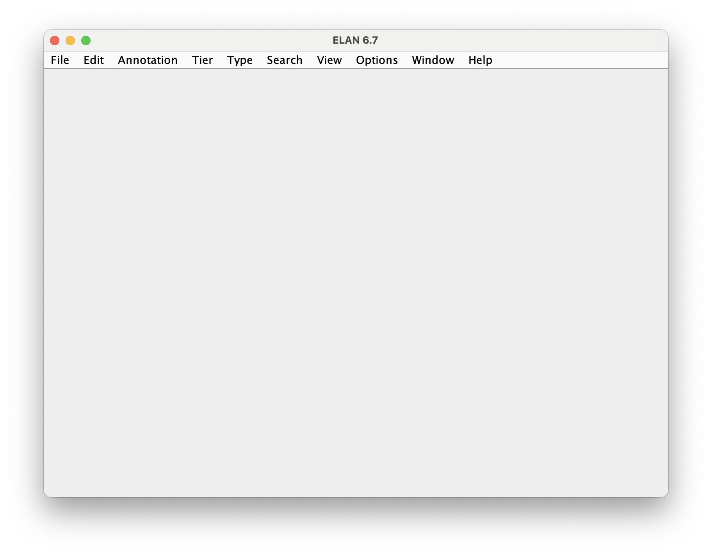
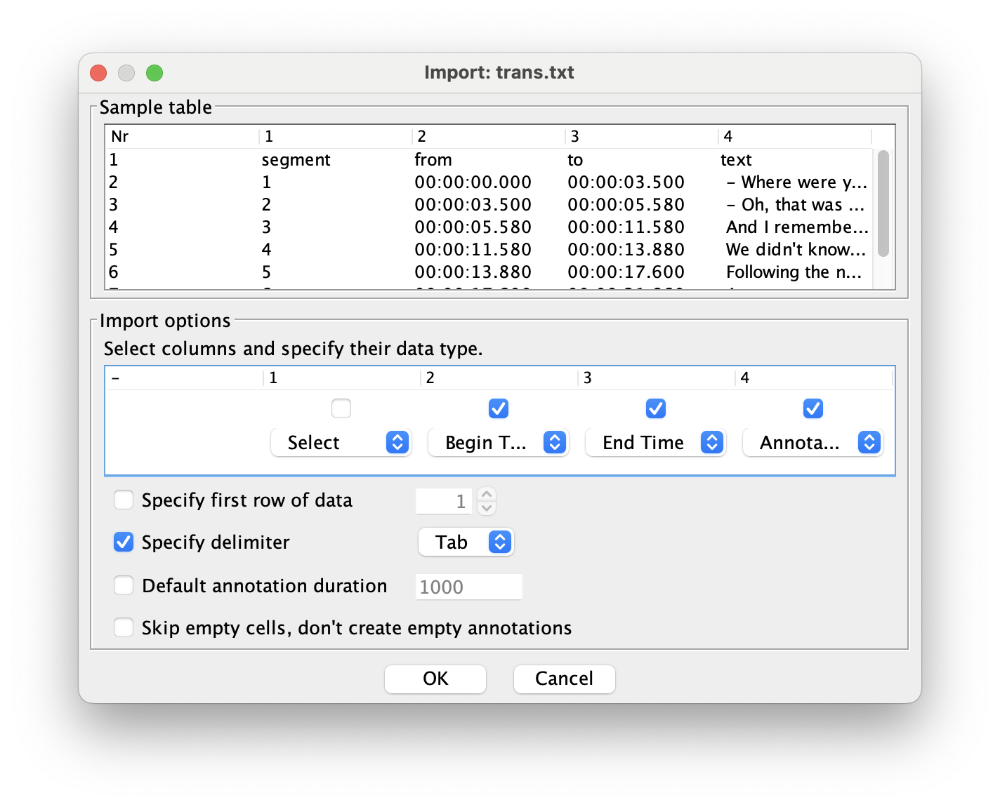
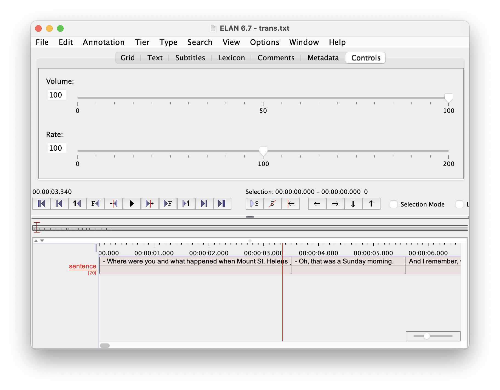
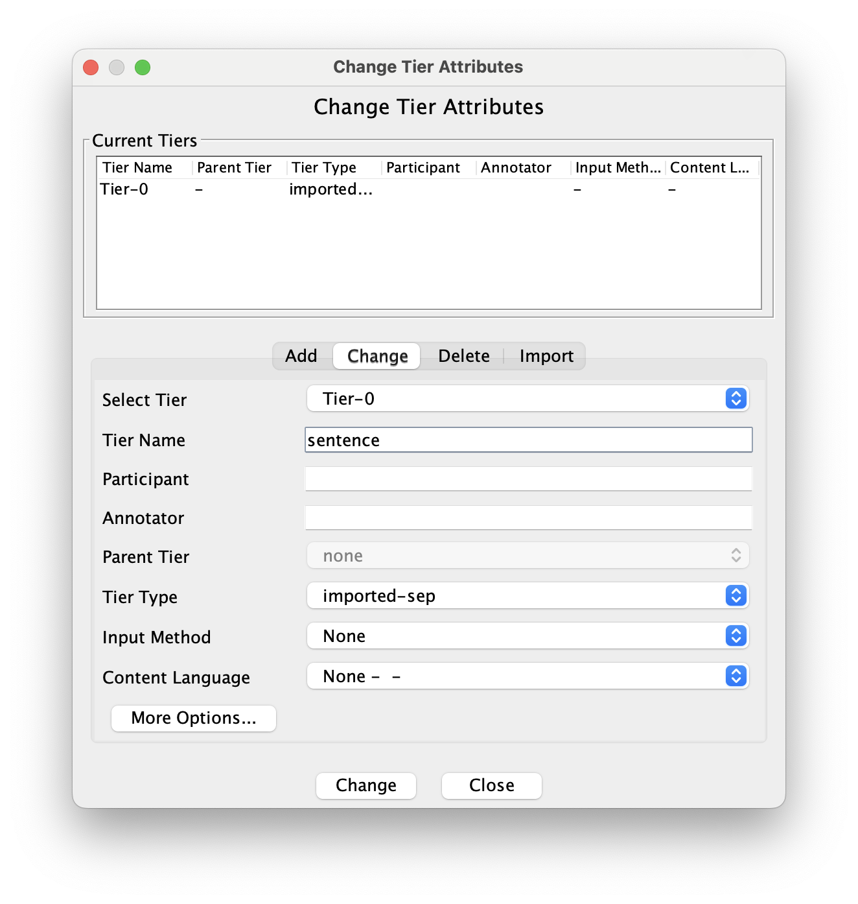
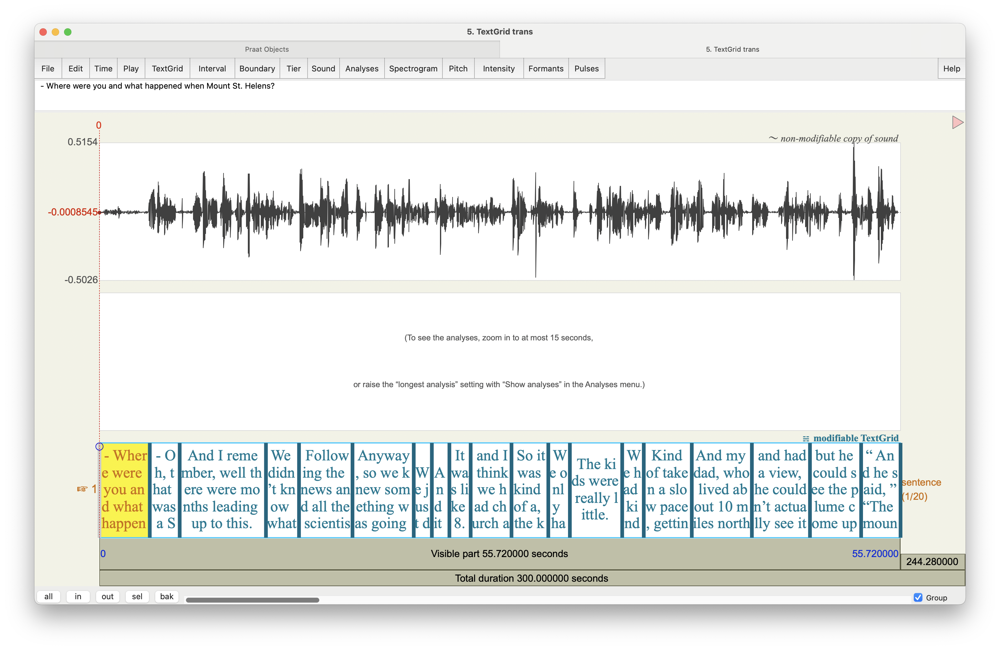

devtools::install_github("bnosac/audio.whisper", ref = "0.3.3")In this tutorial, I’ll walk you through how to use OpenAI’s Whisper model to automatically transcribe your audio completely within R. We’ll do so using the audio.whisper pacakge.
Note
The R package for Whisper is only available through a third-party company called BNOSAC, rather than through OpenAI itself. From what I can tell, it is more limited in its capabilities than OpenAI’s own Python package. Since I have never really learned Python programming, I’ll stick with R.
1 Preliminaries
The first step is to install audio.whisper. Since it’s not available through R’s official repository for R packages, we won’t be able to just use install.packages like normal. Instead, we’ll use the install_github function, which is available in a package called devtools. 1 You’ll need to specify the path "bnosac/audio.whisper", which let’s R know where on GitHub the package is located. We add ref = "0.3.3" as an argument to the installation function to ensure that we’re getting the latest stable version of the package. Without it, you’ll get the latest development version which may be buggy and not work for you.
1 If you don’t have devtools already, you can install it the normal way: install.packages("devtools").
Now that you’ve got the R package installed, you’ll need to actually download the Whisper model to your computer, so that Whisper can function completely offline. There are different sizes of the model, ranging from tiny to large-v3. The smaller ones will get transcription done quicker and take up less room on your computer, but they may not be as accurate. The larger models will take longer to do and will take up more room on your computer, but they will be more accurate. On my computer (a 2023 MacBook Pro), I’ve only been able to get the “small” model to work. Anything larger fails on my computer, possibly because of a lack of processing power. I have transcribed lab quality speech with pretty good results using the small model. A student of mine compared the output to the medium model and found it to be raelly not that much improved over the small model, even though it took more than twice as long. So, for my purposes (and possibly yours too), the small model may be all you need.
Here are the options and the code for each one. We’ll load it using the function whisper and save the output to an object called model. We’ll call that object later on.
library(audio.whisper)
model <- whisper("tiny")
model <- whisper("base")
model <- whisper("small")
model <- whisper("medium")
model <- whisper("large-v1")
model <- whisper("large-v2")
model <- whisper("large-v3")whisper_init_from_file: loading model from '/Users/joeystan/Library/CloudStorage/Box-Box/KohlerTapes/scripts/ggml-small.bin'
whisper_model_load: loading model
whisper_model_load: n_vocab = 51865
whisper_model_load: n_audio_ctx = 1500
whisper_model_load: n_audio_state = 768
whisper_model_load: n_audio_head = 12
whisper_model_load: n_audio_layer = 12
whisper_model_load: n_text_ctx = 448
whisper_model_load: n_text_state = 768
whisper_model_load: n_text_head = 12
whisper_model_load: n_text_layer = 12
whisper_model_load: n_mels = 80
whisper_model_load: f16 = 1
whisper_model_load: type = 3
whisper_model_load: mem required = 603.00 MB (+ 16.00 MB per decoder)
whisper_model_load: kv self size = 15.75 MB
whisper_model_load: kv cross size = 52.73 MB
whisper_model_load: adding 1608 extra tokens
whisper_model_load: model ctx = 464.56 MB
whisper_model_load: model size = 464.44 MBI’ll pick the small model for this tutorial. When you load one, it’ll download the file to your computer in the same folder as where your script is located. You should see a file called ggml-small.bin or something.2
2 If you have whisper installed already somwhere for another project, there’s no need to install it a second time for this specific project. Feel free to provide a pathname to that file instead of "small" and it’ll load it from there.
We’re also going to need to install the av package. This is just for working with audio files and converting them into a format that audio.whisper likes. You can install it the normal way.
install.packages("av")We’ll then load it, as well as tidyverse, and we’ll be ready to go.
library(av)
library(tidyverse)2 Using Whisper
Using Whisper really only takes a few lines of code. So if you’re interested in just a one-off use, then you’re in luck. I’ll first show the bare minimum you’ll need to use Whisper. However, be aware that the output isn’t in a particularly useful format, so you’ll likely need to convert it to a TextGrid, which we can do right here as well. And of course, wrapping it all into a function can help if you need to process multiple files.
The first thing you need to do is convert the audio to a 16-bit WAV file. This is a constraint imposed by audio.whisper (and maybe Whisper itself, I don’t know). We can do this with the av_audio_convert function in the av package. This function takes four arguments:
- the pathname to the audio you want to convert
- the pathname to the output you want to convert
- the format you want to convert the audio to
- the sample rate you want to convert the audio to.
I have a file named 02-Carol.wav that I’m going to use for this tutorial.3 It’s a 1-minute snippet from a sociolinguistic interview I did as part of my dissertation in Washington where she talks about what it was like living near Mount St. Helens when it erupted in 1980. The file is already in the right format, but I’ll run the code anyway just to be sure.
3 You can get this and other sample audio [here](/data.
av_audio_convert("02-Carol.wav", output = "02-Carol.wav_16bit.wav",
format = "wav", sample_rate = 16000)
# Output #0, wav, to '/Users/joeystan/GitHub/joeystanley/blog/whisper/02-Carol.wav_16bit.wav':
# Metadata:
# ISFT : Lavf60.3.100
# Stream #0:0: Audio: pcm_s16le ([1][0][0][0] / 0x0001), 16000 Hz, mono, s16, 256 kb/s
# Adding audio frame 1305 at timestamp 55.57sec - audio stream completed!
# [1] "/Users/joeystan/GitHub/joeystanley/blog/whisper/02-Carol.wav_16bit.wav"
Note
Note that putting just the filename (i.e. "02-Carol.wav") assumes that the file is in the same folder as the script that you’re running this code from. If your file lives somewhere else on your computer, you’ll need to provide a full path (e.g. "/Users/joeystan/Desktop/dissertation/audio/02-Carol/02-Carol.wav) or a relative path (e.g. "../audio/02-Carol.wav").
The same applies to the output. By just providing a filename, it’ll create the file in the same folder as the script. If you want it to be saved somewhere else, you’ll need to provide a full or relative path.
I’ve now created a new file called 02-Carol.wav_16bit.wav. That one should be ready to process. We’ll now use the predict function in audio.whisper to actually run Whisper on that newly created audio file. There are four arguments here.
- first,
model, or the name of the object you created when you loaded the model above newdate: the path to the 16-bit WAV file you want to processlanguage: the language of the audio being transcribedn_threads: the number of cores in your computer you want to devote towards the task. This is not optional, but since many computers nowadays have mutliple cores, you can speed up the task by having the function run in parallel across multiple cores. You can check how many cores you have by runningparallel::detectCores()after installing theparallelpackage. Mine has 12.
We’ll run that function and save that transcription to an object called trans.
trans <- predict(model, newdata = "02-Carol.wav_16bit.wav",
language = "en", n_threads = 12)Processing 02-Carol.wav_16bit.wav (889065 samples, 55.5666 sec), lang = en, translate = 0, timestamps = 0
[00:00:00.000 --> 00:00:03.500] - Where were you and what happened when Mount St. Helens?
[00:00:03.500 --> 00:00:05.580] - Oh, that was a Sunday morning.
[00:00:05.580 --> 00:00:11.580] And I remember, well there were months leading up to this.
[00:00:11.580 --> 00:00:13.880] We didn't know what was gonna be happening up there.
[00:00:13.880 --> 00:00:17.600] Following the news and all the scientists and all that.
[00:00:17.600 --> 00:00:21.860] Anyway, so we knew something was going to happen.
[00:00:21.860 --> 00:00:23.120] We just didn't know when.
[00:00:23.120 --> 00:00:24.340] And it was a Sunday morning.
[00:00:24.340 --> 00:00:25.820] It was like 8.30 in the morning
[00:00:25.820 --> 00:00:28.660] and I think we had church at 11 or something.
[00:00:28.660 --> 00:00:31.220] So it was kind of a, the kids were all really little.
[00:00:31.220 --> 00:00:32.720] We only had three at the time.
[00:00:32.720 --> 00:00:36.360] The kids were really little.
[00:00:36.360 --> 00:00:37.860] We had kind of slept in that morning.
[00:00:37.860 --> 00:00:41.200] Kind of taken a slow pace, getting ready for church.
[00:00:41.200 --> 00:00:45.380] And my dad, who lived about 10 miles north of here
[00:00:45.380 --> 00:00:49.420] and had a view, he couldn't actually see it
[00:00:49.420 --> 00:00:52.980] but he could see the plume come up, called us.
[00:00:52.980 --> 00:00:55.720] And he said, "The mountain just blew."Technically, you’re done using Whisper! Hooray! Here’s the transcription:
trans$data segment from to
1 1 00:00:00.000 00:00:03.500
2 2 00:00:03.500 00:00:05.580
3 3 00:00:05.580 00:00:11.580
4 4 00:00:11.580 00:00:13.880
5 5 00:00:13.880 00:00:17.600
6 6 00:00:17.600 00:00:21.860
7 7 00:00:21.860 00:00:23.120
8 8 00:00:23.120 00:00:24.340
9 9 00:00:24.340 00:00:25.820
10 10 00:00:25.820 00:00:28.660
11 11 00:00:28.660 00:00:31.220
12 12 00:00:31.220 00:00:32.720
13 13 00:00:32.720 00:00:36.360
14 14 00:00:36.360 00:00:37.860
15 15 00:00:37.860 00:00:41.200
16 16 00:00:41.200 00:00:45.380
17 17 00:00:45.380 00:00:49.420
18 18 00:00:49.420 00:00:52.980
19 19 00:00:52.980 00:00:55.720
text
1 - Where were you and what happened when Mount St. Helens?
2 - Oh, that was a Sunday morning.
3 And I remember, well there were months leading up to this.
4 We didn't know what was gonna be happening up there.
5 Following the news and all the scientists and all that.
6 Anyway, so we knew something was going to happen.
7 We just didn't know when.
8 And it was a Sunday morning.
9 It was like 8.30 in the morning
10 and I think we had church at 11 or something.
11 So it was kind of a, the kids were all really little.
12 We only had three at the time.
13 The kids were really little.
14 We had kind of slept in that morning.
15 Kind of taken a slow pace, getting ready for church.
16 And my dad, who lived about 10 miles north of here
17 and had a view, he couldn't actually see it
18 but he could see the plume come up, called us.
19 And he said, "The mountain just blew."Okay, but now we need to get it into a format that’s actually useful. Right now it’s saved basically as a data frame (trans$data). Unfortunately, if you want to do subsequent processing, like forced alignment or extracting acoustic measurements, you’ll need to convert this output into a different format.
3 Using ELAN to convert to a Praat TextGrid
If you’re just doing a small number of files, the easiest way to go would probably be to open this file in ELAN and from there export it into a Praat TextGrid. Let’s walk through that.
First, let’s export the file. Normally, I like doing a comma-separated value (.csv) file, but because Whisper automatically punctuates the transcription, which includes commas, it throws off how .csv files are stored. Instead, I’ll export it as a .txt file, and separate columns with tabs, which are coded in R as \t. I’ll do this using write_delim, which is part of tidyverse. There are three arguments:
- The file you want to export. That’s
trans$data. - The name and path of the file you want to create.
delim = "\t", which tells R to put tabs between columns.
write_delim(trans$data, "trans.txt", delim = "\t")The result is a new file that looks something like this:

OKay, so now we need to jump over to the ELAN software. ELAN is an annotation tool for audio and video and is used by linguists all over the world. You can download it here. I’m not going to explain much more because it’s pretty tangential to what this tutorial is about. All you need to know is that it’s great and that it can convert one transcription format to another, a fact we’ll take advantage of now.
Let’s open up ELAN. Here’s what the window looks like when you first open it.

Go to File > Import > CSV/Tab-delimited Text File and open the new trans.txt file (or whatever you called it) that you just created. You’ll then be presented with a window that will give you some options for how ELAN should read the file in. Here’s what you’ll need to do:
- Towards the bottom of the file, specify that the delimiter is a Tab. That’ll change how the rest of the window looks.
- In the middle of the window (in the “Import options” portion), uncheck the box under 1. That corresponds to the first column of the exported dataframe which is just sequentially numbering the intervals. Not super useful to us.
- For column 2, change it to “Begin Time”. This corresponds to the start of each interval.
- For column 3, change it to “End Time”. This corresponds to the end of each interval.
- For column 4, change it to “Annotation”. This corresponds to the actual transcription.

Once you’ve done that, the transcription should be loaded like this:

We don’t really need to do anything in ELAN other than one small change. Currently, the tier is called “Tier-0”, which you can see in red text towards the bottom left of the window. Let’s change that to something more meaningful to us. Go to Tier > Change Tier Attributes…. In the center of the new window that pops up, change the tier name to whatever you want, then hit “Change”. I’ll change it to “sentence” so that if I want to send it off to DARLA (see tutorial here), I can do so without any other changes.

Now you can simply export it into a Praat TextGrid. Go to File > Export As > Praat TextGrid…. You can use the default settings that show up in that export window, navigate to a location that is convenient for you, give it a name (be sure it has .TextGrid at the end of the filename), and save it with UTF-8 encoding.
Congrats! You now have a Praat TextGrid of an automatically generated transcription using Whisper.

Now, there are a few things you need to be aware of. First, Whisper is going to assume that there’s only one speaker. If there are multiple speakers in your audio, you’ll need to modify the TextGrid and separate those out. It’s out of the scope of this tutorial to show how to do that, but you can look at my tutorial on Praat for some basic, general advice on how to work with TextGrids. You’ll have to just listen to the audio and move any speech from, say, the interviewer, to a new tier.
The other thing that you should be aware of is that for some reason the TextGrid goes for five minutes, even if the audio is not that long. In my case, the audio is only about a minute, but you’ll notice that the TextGrid goes to 300 seconds. That bug must have been introduced in ELAN because it’s not part of the Whisper output. I don’t think it’ll harm anything, but it’s just something to be aware of.4
4 There may be an easy fix to that, but I rarely use ELAN so I don’t know it well enough to say!
Finally, very occasionally, Whisper may introduce a bug in the timing of the intervals such that the end time of one interval is later than the start time of the next interval. I’m not sure why that happens. Praat seems to be able to handle it most of the time, but sometimes it causes Praat to crash. If that happens to you, you’ll need to carefully check trans.txt and make sure each interval’s start time is identical to the previous interval’s end time. If you spot any errors, you can fix them manually.
4 Conclusion
Hopefully with this brief tutorial, you’re able to start to automatically transcribe your own audio files.
In the future, I’ll expand this post to show how you can do all the Whisper stuff in a more automated way. This will include writing a function that converts the output into a TextGrid right in R so that you don’t have to go through ELAN for every file. All you’ll need to do is provide the name of the audio file and it’ll load it it, create the 16-bit WAV file, do the transcription, and export the TextGrid all at once. You can then start to loop over many files at once. But that tutorial will have to wait until I have a little more time.